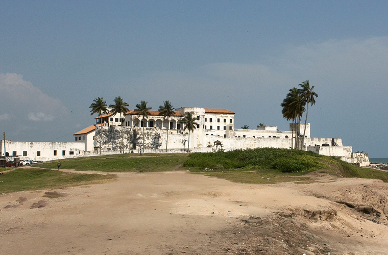
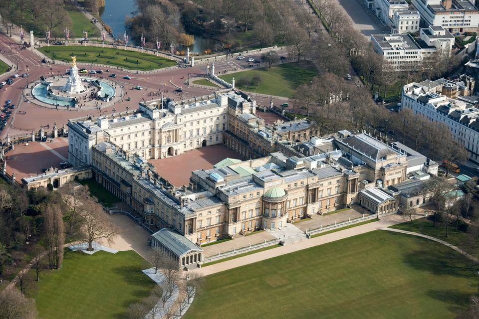
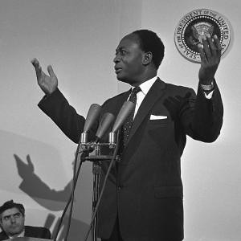

Kolonialgeschichte
Ghana, früher bekannt als die Goldküste, wurde über Jahrhunderte kolonialisiert – insbesondere durch Großbritannien. Diese Phase begann im 15. Jahrhundert mit portugiesischen Festungen wie Elmina und endete offiziell 1957 mit der Unabhängigkeit. Großbritannien übernahm endgültig die Kontrolle 1874.
Elmina Castle (Symbol der frühen Kolonialisierung)

Buckingham Palast – Symbol britischer Kolonialmacht

Unabhängigkeitsprozess
In den 1940er- und 1950er-Jahren wuchs der politische Widerstand gegen die Kolonialherrschaft. Kwame Nkrumah gründete die Convention People's Party (CPP) und organisierte Streiks, Proteste und Dialoge mit der Kolonialregierung.
Am 6. März 1957 wurde Ghana als erstes afrikanisches Land südlich der Sahara unabhängig. Dies markierte einen historischen Moment für die Dekolonialisierung Afrikas.
Nkrumah bei seiner Rede zur Unabhängigkeit

Porträt von Kwame Nkrumah

Folgen der Kolonialzeit heute
Die Kolonialzeit hinterließ wirtschaftliche Abhängigkeiten, ein westlich geprägtes Bildungssystem und eine englisch dominierte Amtssprache. Ghana hat sich politisch stabilisiert, doch die kolonialen Strukturen wirken teilweise bis heute nach.
Parlament von Ghana – modernes Erbe kolonialer Institutionen